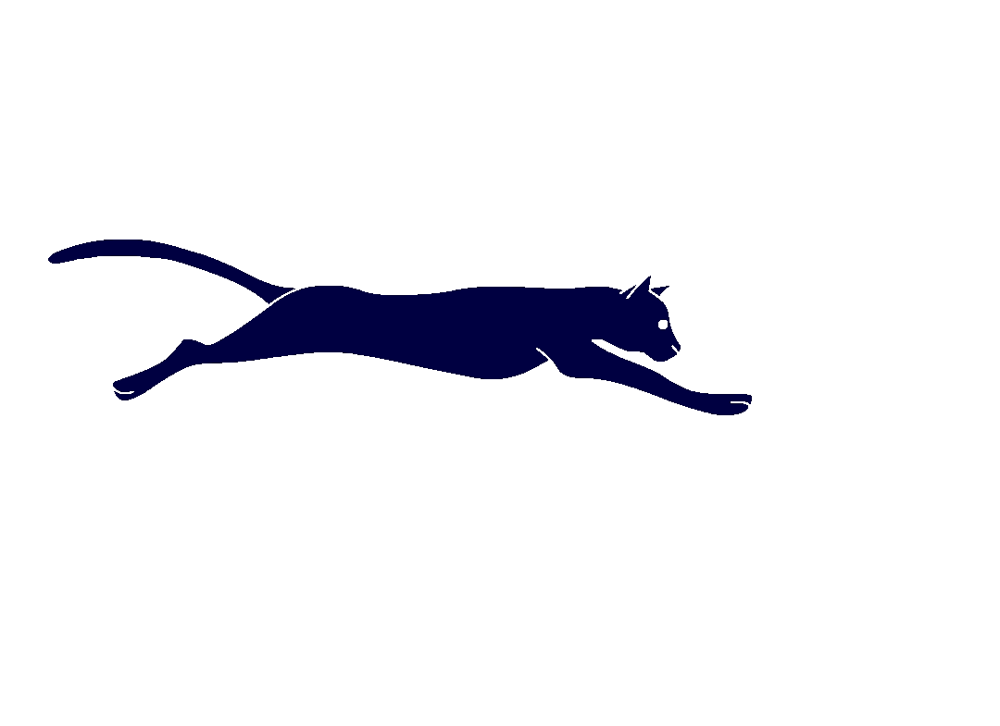

Prazer, me chamo Daniel Juan.
Sou um desenvolvedor web front-end, e meus conhecimentos
abramgem as linguagens: Javascript, HTML5 e CSS3. Nos ultimos meses eu terminei o meu curso de desenvolvimento
na instituição codigo Kid de Campo formoso Bahia. Procuro adquirir experiêriencia cada vez maior na área,
assim podendo ajudar você, a resolver seus problemas web.
